Antweight Combat Robots
Antweight combat robots are small robots ~150g capable of controlling or damaging opponents in order to win fights. They are usually controlled by radio transmitters with a receiver and ESC for powering the motors. There are many different classes of robots, the most common being flippers and spinners. While I was a member of Sheffield Roboteers Society I developed 3 robots, 2 are society robots and one is my personal robot. All of these robots I printed from my Ender 3 S1 using eSUN PLA ST and designed in FreeCAD.
Drum & Bass
Drum & Bass is my first spinner, it is a drum/ eggbeater design with a solid plastic weapon. It sports 2 wheel drive which means I get spend more weight on the weapon. This is my personal robot and has currently competed in no competitions but during testing performed very effective against brittle chassis. I used 2 n20 brushed motors, a Malenki Nano, and a 1806 Brushless Motor, for my transmitter I use a Flysky i6.
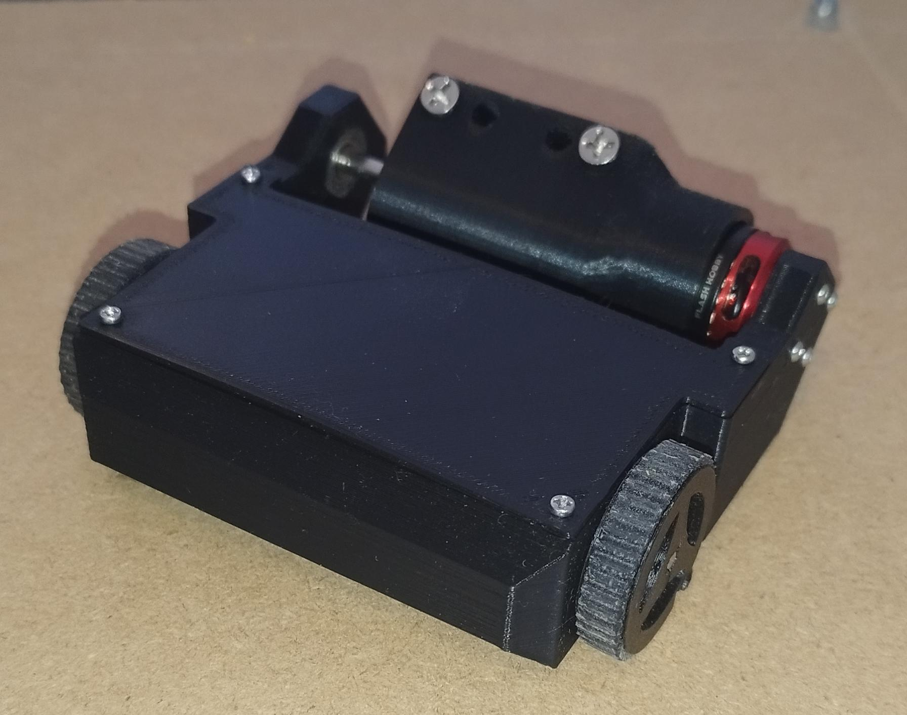 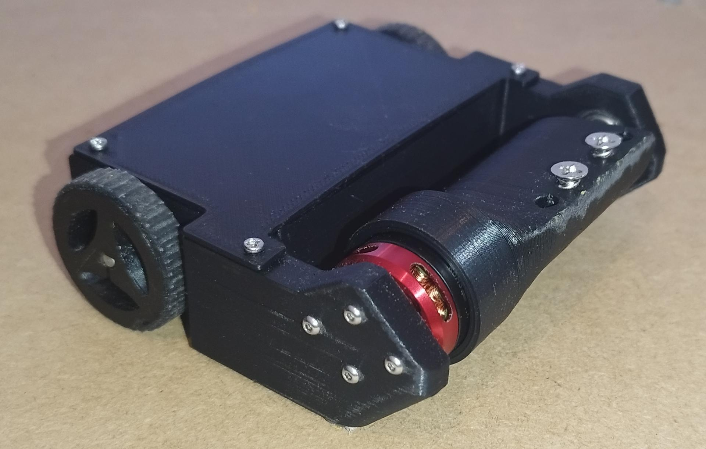 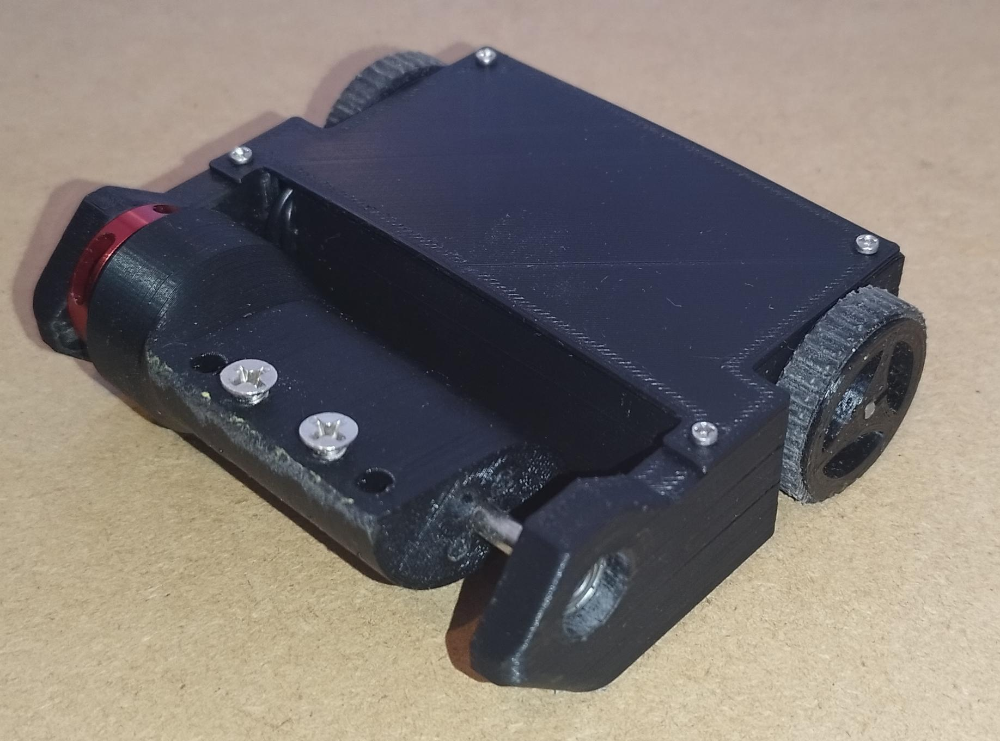Sir Forkalot
Sir Forkalot is a flipper style robot, the flipper is directly attached to the servo, this reduces the weight of the mechanism but is not as effective as spring or band based flippers, it is also 2 wheel drive. As a society robot it cannot compete in fights against spinners. In the few fights it has fought in it handles quite aggressively, however with a decent driver it can prove quite effective at flipping opponents.
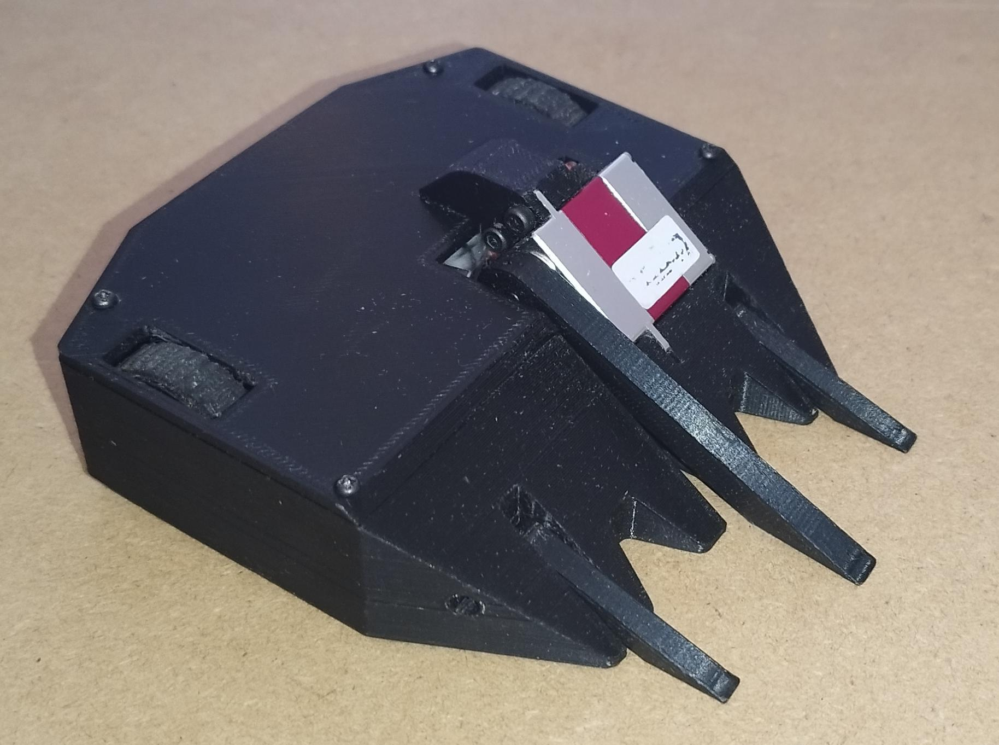 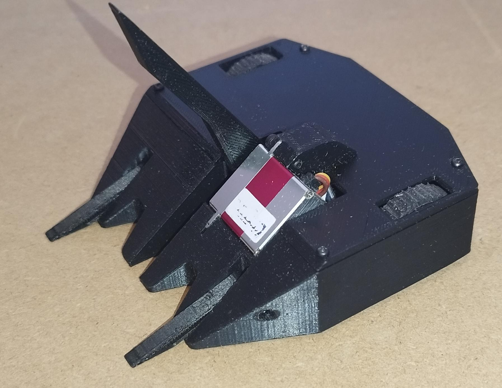Depth Charge
Depth Charge is a pusher robot, it has 8 forks around its body which makes it difficult to control from the sides, it also has 4 wheel drive, increasing the control the robot has against its opponents. As it is also society robot it also cannot be entered into fights with spinners but it has performed relatively well against Sir Forkalot as the long forks make it difficult for the large fork on Sir Forkalot to get underneath and flip it.
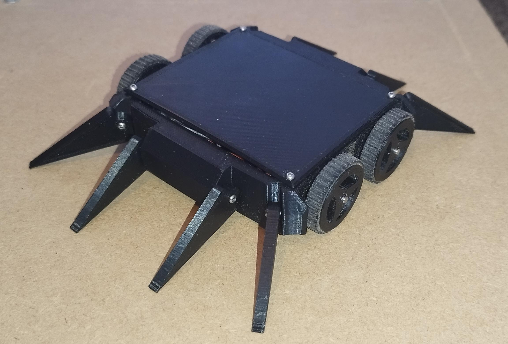 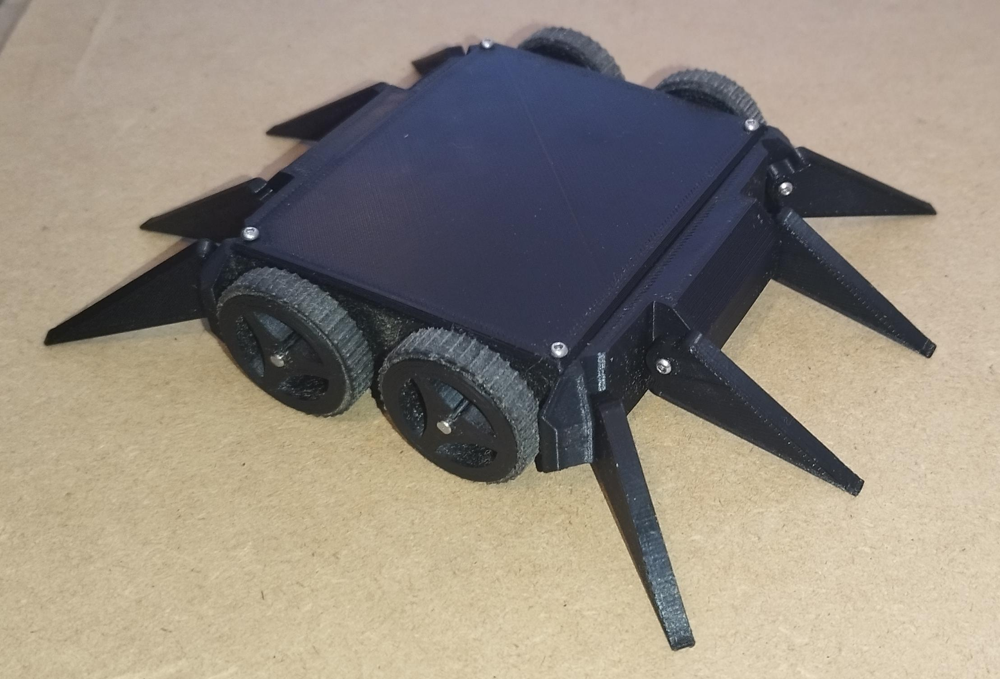ESP32 Bluetooth Low Energy Gamepad: Github link
My first personal electronics project. I designed and developed the software using the esp32-idf crates for Rust.
You can find my write up here.

Simple Asteroids Game: Website link
I made this game with my friend to learn Rust, the bevy game engine and how ECS based game engines work. We found it a lot of fun to make and is still work in progress, it is best experienced with a mouse and keyboard.
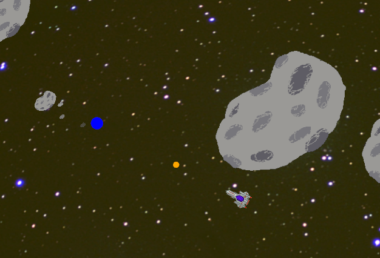Osmosis Simulation Website link
This is a website I made as part of my Computer Science non-examined Assessment. You can vary the concentration of water and salt molecules on either side of the semi permeable membrane and see the affect on the speed of the particles and the movement of particles from one side of the membrane to the other. Osmosis is defined as the movement of water from an area of high concentration to an area of low concentration across a semi-permeable membrane. Osmosis can clearly be seen in both the macro and micro models. This website is best navigated with a mouse and keyboard.
FXCG Projects
Using the fxcg sdk I developed a few applications in C for my Casio fx-CG50 Graphical Calculator.
Control: Github Link
Control is an Application to display the step responses and bode plots for first order and second order Laplace transforms. The most challenging part of this applications is to find accurate algorithms for the different operations on doubles as there is no pow() or exp() function builtin. This project is mainly designed around my course, which involves a lot of control theory and modelling.
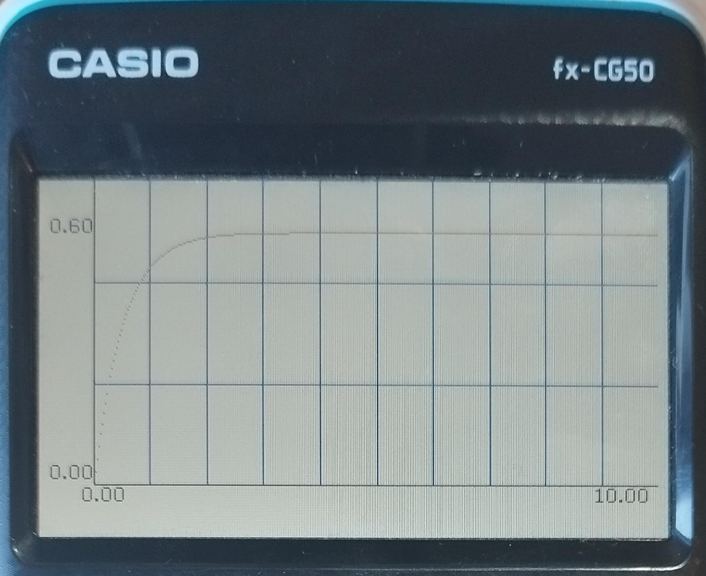 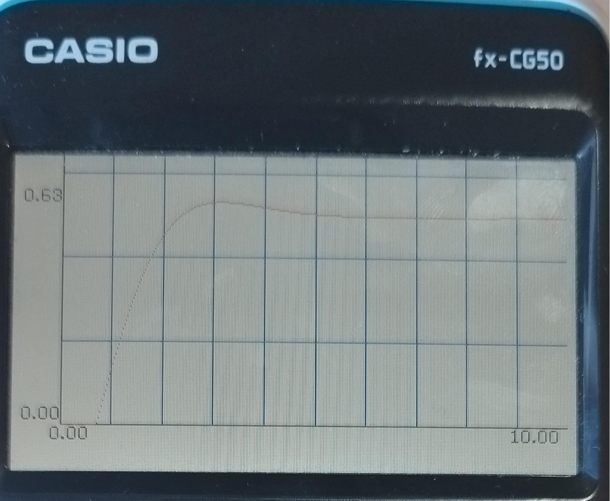 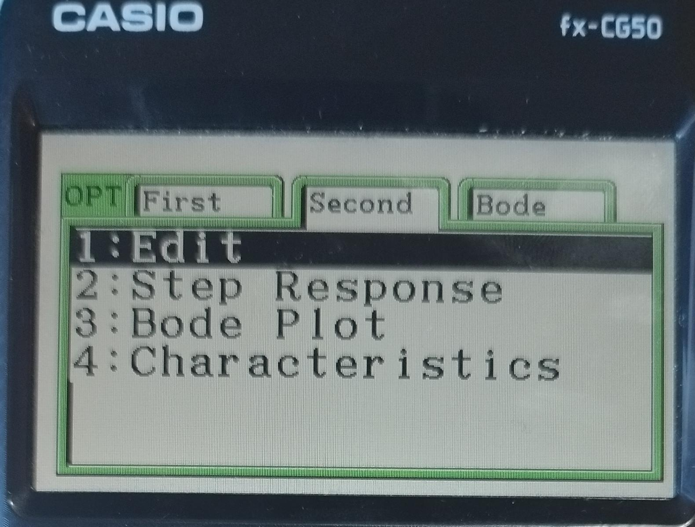Mandelbrot: Github Link
The Mandelbrot Set is a fractal pattern, you can pan and zoom the camera and the beauty found in mathematics. I heavily optimised this application for performance, using fixed point calculations rather than doubles. However, this means you can't zoom in infinetely.
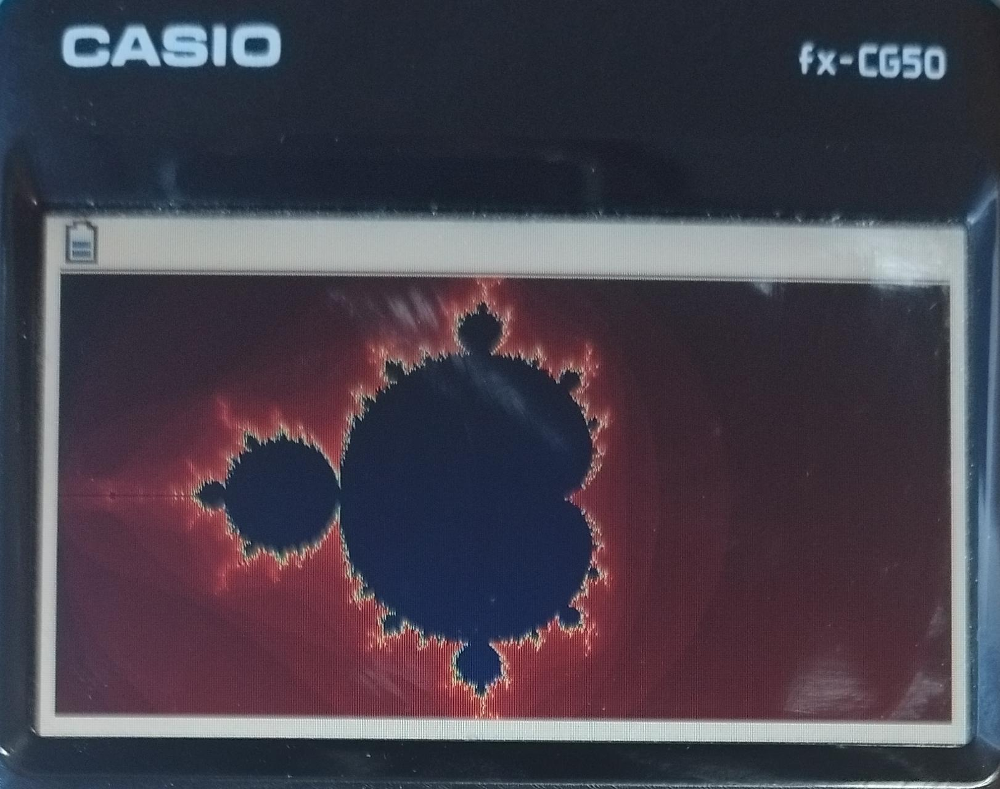 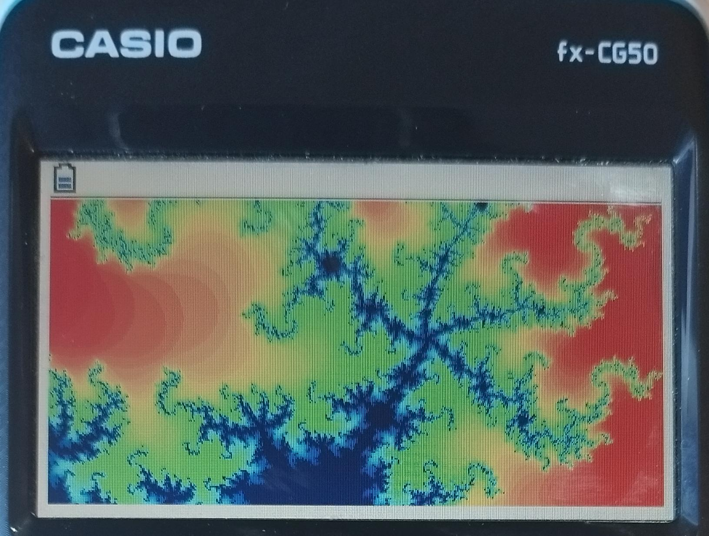 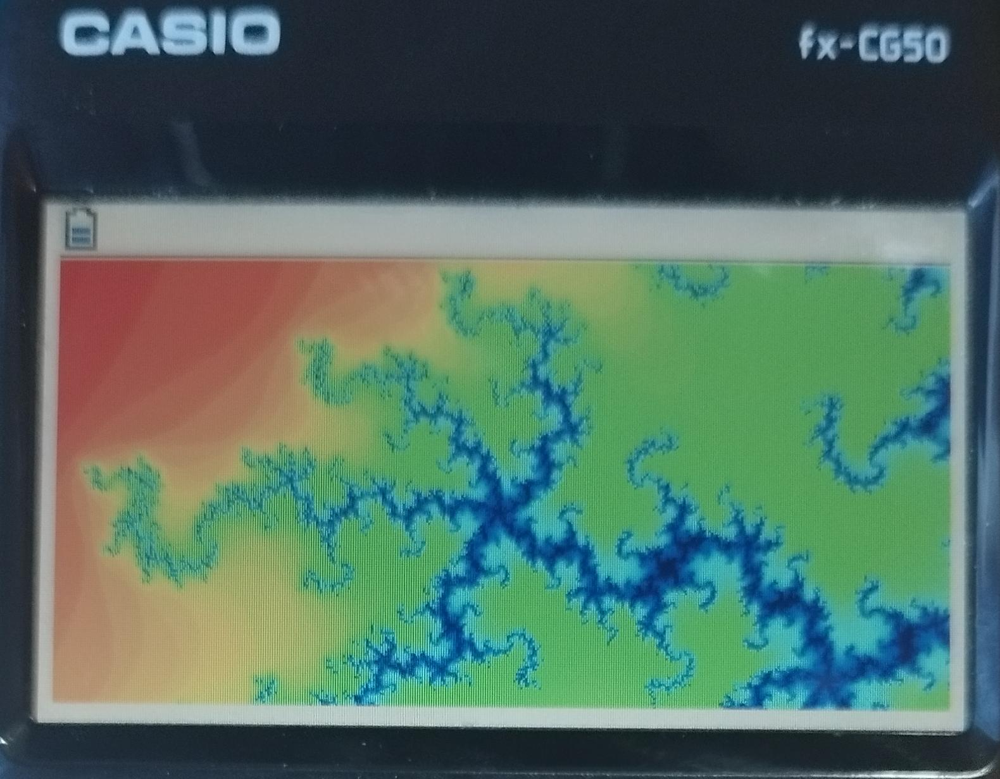